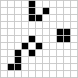

Conway's Game Of Life
Introduction
The Game of Life, also known simply as Life, is a cellular automaton devised by the British mathematician John Horton Conway in 1970. It is a zero-player game, meaning that its evolution is determined by its initial state, requiring no further input. One interacts with the Game of Life by creating an initial configuration and observing how it evolves. It is Turing complete and can simulate a universal constructor or any other Turing machine.
How to play
As mentioned before, the Game of Life is a zero-player game that automaticaly playes out, depending on the initial state of the board.
In our game page, you have the options of creating a custom sized board (10x10 minimum size, 100 X 100 maximum size) and then manualy create the initial state yourself by clicking on the cells. A black cell on the grid represents a living cell and a white cell is a dead one. Note that clicking on a black cell will turn it white and vice versa
We also give you the possibility of starting with a random board by clicking the random button, or with one of several demo setups available via the dropdown menu.
What are the rules
Each cell in the two dimensional grid can be at one of two possible states living or dead(sometimes also refered to as populated or upopulated). Every cell interacts with its eight neighbors to determine its state in the next game cycle (hereby refered to as generation). At each new generation the following transitions will occur
- A cell with fewer than two neighbors dies from isolation
- A cell with exactly two or three neighbors lives on
- A cell with more than three neighbors dies from overpopulation
- A dead cell with exactly three living neighbors becomes alive as if by reproduction
Notable patterns
Many different patterns have been observed in the Game Of Life, and people have been classifying them in accordance to their behavior.
The still life paterns
A still life is a pattern that does not change from one generation to the next. They are by far the simplest types of pattern found in the Game of Life.
Examples


Eaters
A special subcategory of still life, the eaters can be used to absorb or modify some other pattern (like a glider or a spaceship) and return to their original state after the collision. Notable examples are the fish-hook pattern, which can absorb several types of spaceships, and the reflector which can alter the trajectory of incoming spaceships
Oscilator patterns
In a cellular automaton, an oscillator is a pattern that returns to its original state, in the same orientation and position, after a finite number of generations. Thus the evolution of such a pattern repeats itself indefinitely. In game of life a number of oscillators have been observed, with the simplest one being the blinker (see image).

Try it for yourself!
In the game area create a streight line that is three cells wide. Run the game and congratulations! You have created a blinker. What would happen if instead of a line you made a three wide cross?
You can also observe some interesting oscilator patterns by using the dropdown menu; Pulsar, A for All, Clock and 101 are all oscilators.
Spaceship patterns
In a cellular automaton, a finite pattern is called a spaceship if it reappears after a certain number of generations in the same orientation but in a different position. The smallest such number of generations is called the period of the spaceship.

Try it for yourself!
In the game area select one of the glider, lightweight spaceship or copperhead, all of wich are spaceship patterns. Notice how they all move at different speeds. Now experiment a bit. Remember the eater patterns we discussed above? What happens when you put one in the path of a spaceship? Does the angle matter?
Guns and other generators
Coway originally that no pattern can grow indefinitely. This was eventualy proven wrong by a team in Masachusettes Institute of Technology lead by Bill Gosper. Gosper and his team came up with the concept of the Gosper Glidr Gun, a pattern that, on the 15th generation and every 30 generations thereafter, creates a glider and sends it off, thus achieving infinite growth. Since then a lot of similar patterns have been created (such as the Simkin glider gun). You can test Gosper's gun in the game area by choosing it from the dropdown menu
Learn More
Read through the original submission of Conway's Game Of Life here
Watch a series of interviews with Conway himself abouyt the Game of Life and his other notable contributions to mathematics in this Numberphile playlist
See this excelent video by Alan Zucconi to understand why the Game Of Life is Turring complete.